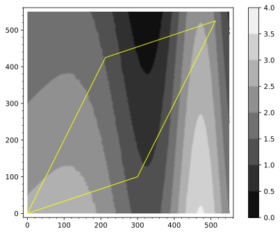

Section13.10Surface Integrals of Scalar Valued Functions
Motivating Questions
How can we measure the accumulation of a scalar-valued function along a surface in space?
What does that accumulation measure?
How can we efficiently calculate scalar surface integrals?
Preview Activity13.10.1.
In Preview Activity 13.5.1 we looked at how to understand line integrals of scalar functions through the analogy of running a mining machine along a given path. In short, the amount of copium mined depended on the density of copium at points on the path and the length of the path driven by the mining rig.

Figure13.10.1.A plot of land with density of copium deposits and the edges of the plot drawn in yellow
The opening tasks of Preview Activity 13.5.1 had you estimating the amount of copium mined by driving along the edge of a plot of land (drawn in yellow on Figure 13.10.1). This iterpretation meant that the scalar function we were using measured the linear density of copium. Thus, the Riemann sum we computed was the product of linear density of copium with the distance traveled.
(a)
In this task, we will interpret Figure 13.10.1 as a contour graph of the density of copium per unit area. This will allow us to compute the total amount of copium in our mining area by setting up a double integral. To approximate the total amount of copium available in our mine, do the following:
(i)
Break the mining plot (the area inside the yellow segments of Figure 13.10.1) into three pieces. Estimate the area of the three pieces you are using. Write a few sentences explaining your methods of estimating the areas.
(ii)
For each of the three pieces you used in part a.i, estimate the average density of copium on the piece. Write a few sentences explaining your methods of estimating the average density on each piece.
(iii)
Give an estimate for the total amount of copium on the mining plot and explain your computation.
(b)
What if instead of your mining plot being on a flat piece of land as represented in Figure 13.10.1, your mining plot was on a hill as represented in Figure 13.10.2. If we had the same copium density plot as a function of the \((x,y)\) coordinates, which of the following would you expect to be true?
Figure13.10.2.A 3D plot of the region including our mining area (shown with boundary in red)
In Section 13.9, the idea of a flux integral was introduced by looking at how much of a vector field flows through a given section of a surface in space. In particular, the flux integral measured the accumulated amount of the vector field that is orthogonal to the surface, which changes at different points on the surface. Theorem 13.9.7 gives an efficient way to calculate a flux integral in terms of a parameterization of the surface. This was an extension of the method for computing the surface area given in Section 12.6.
Just as we generalized line integrals of vector fields into scalar line integrals in Section 13.5, we will spend this section examining questions related to the accumulation of scalar-valued functions along surfaces in space as a means of generalizing flux integrals.
Subsection13.10.1Defining surface integrals of scalar functions
In order to create a Riemann sum that will measure the acculumation of \(f(x,y,z)\text{,}\) a scalar valued function, over \(S_1\text{,}\) a smooth, bounded surface in space, we will break our surface into smaller pieces where we can approximate the value of \(f\) and the surface area of each piece. Recall that in Subsection 12.6.2 and Section 13.9, we developed a way to measure surface area given a parameterization for the surface.
Suppose that \(S_1\) is parameterized by \(\vr(s,t)\) with \(a\leq s\leq b\) and \(c \leq t \leq d\text{.}\) In our classic calculus style, we slice our region of interest into smaller pieces. Specifically, we slice \(a\leq s\leq b\) into \(n\) equally-sized subintervals with endpoints \(s_0,s_1,\ldots,s_n\) and we slice \(c \leq t \leq d\) into \(m\) equally-sized subintervals with endpoints \(t_0,t_1,\ldots,t_m\text{.}\) This divides \(D\) into \(nm\) rectangles of size \(\Delta{s}=\frac{b-a}{n}\) by \(\Delta{t}=\frac{d-c}{m}\text{.}\) We index these rectangles as \(D_{i,j}\text{.}\) Every \(D_{i,j}\) has area (in the \(st\)-plane) of \(\Delta{s}\Delta{t}\text{.}\) The partition of \(D\) into the rectangles \(D_{i,j}\) also partitions \(S_1\) into \(nm\) corresponding pieces which we call \(S_{i,j}=\vr(D_{i,j})\text{.}\) From Section 12.6 (specifically equation (12.6.1)) the surface area of \(S_{i,j}\) is approximated by \(SA_{i,j}=\vecmag{(\vr_s \times \vr_t)(s_i,t_j)}\Delta{s}\Delta{t}\text{.}\)
We illustrate this approximation of \(S_1\) by rectangular patches of tangent planes, each with area \(SA_{i,j}=\vecmag{(\vr_s \times \vr_t)(s_i,t_j)}\Delta{s}\Delta{t}\) in Figure 13.10.3, where you can adjust the slider to control the number of rectangles. (For simplicity, the figure takes \(m=n\text{.}\))
Figure13.10.3.Pieces of the tangent planes used to approximate surface area
To measure the accumulation \(A\) of the output of \(f(x,y,z)\) over \(S_1\text{,}\) we use the following Riemann sum:
as \(\Delta s\to 0\) and \(\Delta t\to 0\text{,}\) a double Riemann sum of this form represents the double integral (over the variables \(s\) and \(t\)) of the function \(f(x(s,t),y(s,t),z(s,t)) \vecmag{(\vr_s \times \vr_t)(s,t)}\text{.}\) This leads to the following theorem.
Theorem13.10.4.
Let a smooth surface \(S_1\) be parametrized by \(\vr(s,t)\) over a region \(D\text{,}\) and let \(f\) be a continuous function on a neighborhood around \(S_1\text{.}\) The accumulation of \(f(x,y,z)\) over \(S_1\) is denoted by \(\iint_{S_1} f \, dS\) and is called the scalar surface integral of \(f\) over \(S_1\). The scalar surface integral of \(f\) over \(S_1\) is computed as
In the following example, we both reason about the value of a scalar surface integral without working through computations and apply Theorem 13.10.4 to compute values of scalar surface integrals.
Example13.10.5.
For this example, we will consider the surface \(S_1\) given by \(x^2+y^2=z^2\) such that \(1\leq z \leq 3\text{.}\) This is the same part of the cone used in Example 13.9.9. We also let \(f(x,y,z)=x\text{.}\)
(a)
For our first part of our example, we use symmetry to reason about \(\iint_{S_1} f\, dS\text{.}\) Without using any calculations or parameterizations, we can reason that this scalar surface integral will be zero. In a scalar surface integral, we are calculating the accumulation of the scalar output over a surface area in space. In Figure 13.10.6, you can see that we can symmetrically break our surface \(S_1\) into two regions that have exactly the same surface area properties and symmetric output values for our scalar function, \(f\text{.}\) Here we denote by \(S_2\) the portion of \(S_1\) with \(x\geq 0\) (colored green), while \(S_3\) is the magenta portion of the surface, which has \(x \lt 0\text{.}\) The only difference between the green and magenta portions of Figure 13.10.6 that is relevant to our surface integral is that the values of \(f\) will be positive on the green surface \(S_2\) and negative on the magenta surface \(S_3\) No matter how we break up the Riemann sum or the corresponding scalar surface integral for the green side of our surface, applying the same pattern to the magenta side will give the same result but with an opposite sign. In other words,
\begin{equation*}
\int_{S_2} f \, dS = - \int_{S_3} f \, dS\text{.}
\end{equation*}
Figure13.10.6.The surface \(S_1\) divided into regions \(S_2\) with positive \(x\)-coordinate in green and \(S_3\) with negative \(x\)-coordinate in red
Therefore,
\begin{equation*}
\int_{S_1} f \, dS = \int_{S_2} f \, dS + \int_{S_3} f \, dS = \int_{S_2} f \, dS - \int_{S_2} f \, dS =0\text{.}
\end{equation*}
(b)
From a calculation standpoint, we can verify this result using our parameterization from Example 13.9.9 in Theorem 13.10.4. Specifically, we will use the parameterization of \(S_1\) given by \(\vr(s,t)=\langle s \cos(t), s \sin(t), s \rangle \) with bounds \(1\leq s \leq 3\) and \(0 \leq t \lt 2 \pi\text{.}\) We also know from Example 13.9.9 that
Hence, we have \(\vecmag{\vw}=\sqrt{s^2(\cos(t)^2+\sin(t)^2) +s^2}=\sqrt{2} s\text{.}\) Thus, Theorem 13.10.4 gives
\begin{equation*}
\int_{S_1} f \, dS = \int_1^3 \int_0^{2\pi} (s \cos(t)) \, \sqrt{2} s\, dt\, ds =0\text{.}
\end{equation*}
Notice that we can evaluate this integral quickly because the inside integral is \(\int_0^{2\pi} \cos(t)\, dt = 0\text{.}\)
(c)
If we want to calculate the integral of \(f(x,y,z) = x\) over \(S_2\text{,}\) then we have very little extra work to do. Only the bounds on the integral will change since we are using the same parameterization and function from the previous part. We can use the parameterization given by \(\vr(s,t)=\langle s \cos(t), s \sin(t), s \rangle \) with \(1\leq s \leq 3\) and \(-\frac{\pi}{2} \leq t \lt \frac{\pi}{2} \text{.}\) As before, \(\vecmag{\vw} =\sqrt{s^2(\cos(t)^2+\sin(t)^2) +s^2}=2s\text{.}\) Thus, Theorem 13.10.4 gives
It makes sense that the result of \(\int_{S_2} f \, dS\) is positive because the output of our function is non-negative for all points on \(S_2\text{.}\) Remember that the Riemann sum used in calculating surface integrals of scalar functions is the product of the function’s value on each piece times the estimate of the surface area. Thus, if the function’s value is positive for all points on the surface, then the scalar surface integral will also be positive.
Before moving on to an activity that gives you a chance to practice reasoning about scalar surface integrals, we consider an additional example. We
Example13.10.7.
For this example, we will consider the same surface \(S_1\) as in Example 13.10.5, but we will change the scalar function we are integrating to something more complicated. Our goal is to calculate
We can reuse the parameterization and calculations from above for \(S_1\) here and move directly to setting up the iterated integral. We will take a moment here to note that converting our scalar function \(g(x,y,z)= z-x^2\) to a function of \(s\) and \(t\) will give \(g(s,t)=s-s^2 \cos(t)^2\text{.}\) Therefore, we have the following iterated integral, which we evaluate:
This result is a bit more difficult to to make sense of as being negative. In Figure 13.10.8, we have a plot of the surface \(S_1\) in blue and the parabolic cylinder surface given by \(z-x^2=0\) is plotted in yellow. The points on the yellow surface correspond to where our scalar function (\(g(x,y,z)= z-x^2\)) gives an output of zero. The points inside the parabolic cylinder have a \(z\)-coordinate greater than \(x^2\text{,}\) which means that \(g\) will have a positive output for these points. The points outside of the parabolic cylinder have a \(z\)-coordinate less than \(x^2\text{,}\) which means that \(g\) will have a negative output for these points. In order to make an argument about whether \(\int_{S_1} z-x^2 \, dS\) is positive, negative, or zero, we will need to assess whether there is more surface area where \(g\) takes on positive values, more with negative values, or an equal amount of positive-negative values. Actually, our problem is even harder than this! Beacuse the Riemann sum is the product of the output for each piece of our surface times the surface area estimate, we will need to think about which points/pieces have larger or smaller outputs for \(g\text{.}\) This is very difficult in general, because we need a systematic way of estimating both the output of \(g\) and the surface area of different pieces of the surface.
Figure13.10.8.The surface \(S_1\) is plotted with the surface given by \(z-x^2=0\)
In our case, there is more surface area of \(S_1\) inside the parabolic cylinder than outside. For points that are far away from the yellow surface, the magnitude of the value of \(g\) for that point will be large. For points that are close to the yellow surface, the \(z\)-coordinates are close to \(x^2\text{,}\) and thus values of \(g\) are close to zero. This means that in order to properly estimate the scalar surface integral, we must assess whether there is a greater weighted surface area inside the parabolic cylinder than outside, where the weight of each surface area piece is given by how far the piece is from the yellow parabolic cylinder. This is not an easy argument to make, and is not easy to verify visually for this example. For some examples, you may be able to make a nice geometric arguement about the size of scalar surface integrals, but the algebraic calculation given by Theorem 13.10.4 gives an exact value.
In the next activity, we consider some situations where we can reason about the sign of a surface integral of a scalar function.
Activity13.10.2.
In this activity, we will try to understand the scalar surface integral by looking at whether the value of the scalar surface integral will be positive, negative, or zero over common surfaces. In each part below, you are given a function and a surface. For each surface, first draw a plot of the surface and make sure you have labeled a proper scale for each coordinate direction. Then reason if the given surface integral is positive, negative, or zero. Be sure to justify your answers in terms of the function being integrated and the particulars of the surface of integration.
(a)
For \(S_1\) defined as the top half (\(z \geq 0\)) of the sphere of radius one centered at the origin, consider the surface integral \(\iint_{S_1} x \, dS\text{.}\)
(b)
For \(S_2\) defined as the bottom half (\(z \leq 0\)) of the sphere of radius one centered at the origin, consider the surface integral \(\iint_{S_2} z \, dS\text{.}\)
(c)
For \(S_3\) defined as the disc of radius one centered at \((1,0,0)\) on the plane \(x=1\text{,}\) consider the surface integral \(\iint_{S_3} x+z \, dS\text{.}\)
(d)
For \(S_1\) as defined above, consider the surface integral \(\iint_{S_1} x+z \, dS\text{.}\)
Subsection13.10.2Properties of Scalar Surface Integrals
Before stating some useful properties of scalar line integrals, we will recall some convenient notation. If \(S_1\) and \(S_2\) are disjoint surfaces 1
Technically, the surfaces may intersect, but there are restrictions on the manner in which they can intersect, and we will not go into the details here.
, we denote by \(S_1+S_2\) the surface containing every point that is in \(S_1\) or \(S_2\text{.}\) Also, if \(S_1\) is a surface, then \(-S_1\) denotes the same surface but parameterized in such a way that the normal vector points in the opposite direction. The list below summarizes some other properties of scalar surface integrals, each of which has a familiar analogue amongst the properties of other integrals we have studied.
Properties of Scalar Line Integrals.
For a constant scalar \(k\text{,}\) scalar valued functions\(f\) and \(g\text{,}\) and oriented surfaces \(S_1\)and \(S_2\text{,}\) the following properties hold:
\(\displaystyle \displaystyle \iint_{S_1} (k f) \, dS = k \iint_{S_1} f \, dS\)
\(\displaystyle \displaystyle\iint_{S_1} (f+g) \, dS = \iint_{S_1} f dS + \iint_{S_1} g \, dS \)
\(\displaystyle \displaystyle\iint_{-S_1} f \, dS = \iint_{S_1} f \, dS\)
\(\displaystyle \displaystyle\iint_{S_1+S_2} f \, dS = \iint_{S_1} f \, dS + \iint_{S_2} f \, dS\)
Activity13.10.3.Explaining Properties of Scalar Surface Integrals.
In this activity, we will be explaining each of the properties from Properties of Scalar Line Integrals in the context of a new analogy. We have just purchased a plot of land that spans two mountains, Sugar Mountain and Spice Mountain. We will label the plot of land on Sugar Mountain \(S_1\) and the plot of land on Spice Mountain \(S_2\text{.}\) Unfortunately there are two types of toxic organisms on the surface of your new land, which may explain why you paid so little for the land. Let \(f\) be the density of the toxic fungus on your new plot of land and let \(g\) be the density of toxic bacteria on the new plot.
(a)
Explain in your own words what \(\iint_{S_1} f \, dS\) means in the above analogy and what exactly would be measured by this scalar line integral.
(b)
Explain in your own words what \(\displaystyle \iint_{S_1} (2 f) \, dS = 2 \iint_{S_1} f \, dS\) means in the new analogy. It may be helpful to describe each side of the equation separately and say why they are equal in the analogy.
(c)
Explain in your own words what \(\displaystyle \iint_{S_2} (f+g) \, dS = \iint_{S_2} f \, dS + \iint_{S_2} g \, dS\) means in the new analogy. It may be helpful to describe each side of the equation separately and say why they are equal in the analogy.
(d)
Explain in your own words what \(\displaystyle \iint_{-S_2} f \, dS = \iint_{S_2} f \, dS\) means in the new analogy. It may be helpful to describe each side of the equation separately and say why they are equal in the analogy.
(e)
Explain in your own words what \(\displaystyle \iint_{S_1+S_2} f \, dS = \iint_{S_1} f \, dS + \iint_{S_2} f \, dS\) means in the new analogy. It may be helpful to describe each side of the equation separately and say why they are equal in the analogy.
We will conclude this section with one more example of computing a scalar surface integral and then an activity that asks you to compute one for yourself using a parameterization of a surface.
Example13.10.9.
Let us return to one of the problems from Activity 13.10.2. Specifically, we will compute the answer to part a of that activity. We will compute \(\iint_{S_1} x \, dS\) where \(S_1\) is the top half (\(z \geq 0\)) of the sphere of radius one centered at the origin. Thinking in terms of spherical coordinates is helpul for determining a parameterization of \(S_1\text{.}\) Here we can use \(\vr(s,t)=\langle \cos(s)\sin(t),\sin(s)\sin(t),\cos(t)\rangle\) where \(0 \leq s\leq 2\pi\) and \(0\leq t\leq \pi/2\text{,}\) which comes from thinking of \(s=\theta\) and \(t=\phi\) in spherical coordinates (and \(\rho=1\)). Using Theorem 13.10.4, we need to compute the partial derivatives of \(\vr\) with respect to \(s\) and \(t\text{,}\) then compute \(|{\vr_s \times \vr_t}| \text{.}\) For our parameterization, we get
Note that \(\vr_s \times \vr_t = -\sin(t) \vr(s,t)\text{,}\) which means that \(\vecmag{\vr_s \times \vr_t} = \sin(t)\) because \(\vecmag{\vr(s,t)} = 1\) for any \(s\) or \(t\) and \(\sin(t)\geq 0\) for \(0\leq t\leq \pi/2\text{.}\)
We can now use Theorem 13.10.4 to compute the scalar surface integral as
This result should match your answer for part a of Activity 13.10.2 since the values of the function \(f(x,y,z)=x\) are symmetric but opposite in sign for the parts of the surface in the octants with \(x\gt 0\) as compared to the octants with \(x\lt 0\text{.}\)
Activity13.10.4.
Compute the value of the scalar surface integral in part c of Activity 13.10.2. That is, compute \(\iint_{S_3} x+z \, dS\) where \(S_3\) is the disc of radius one centered at \((1,0,0)\) on the plane \(x=1\text{.}\) Explain why your answer makes sense geometrically.
Subsection13.10.3Summary
Scalar surface integrals are defined in terms of double Riemann sums of the product of the value of a scalar-valued function at a point on the surface and the area patch of the tangent plane to the surface at that point.
A scalar surface integral measures the total accumulation of a scalar-valued function on the surface.
Scalar surface integrals can be efficiently computed by parameterizing the surface of integration as \(\vr(s,t)\) and then integrating \(\iint_D f(s,t) \vecmag{\vr_s\times \vr_t} \, dA\text{,}\) where \(D\) is the domain of the parameterization.
Exercises13.10.4Exercises
1.
This WebWork problem uses a slightly different notation which you might see in other sources. In this problem, the parameters used are \(u\) and \(v\) and the parameterization is given by \(\vec{\Phi}(u,v)\text{.}\) The tangent vectors created by taking partial derivatives are notated by \(\vT_u\) and \(\vT_v\text{.}\) and the normal vector to the surface is given by \(\vec{n}(u,v)\text{.}\)
Show that \(\Phi(u,v)= (4 u+3 ,u-v,7 u+v)\) parametrizes the plane \(2x-y-z=6\text{.}\) Then:
(a) Calculate \({\mathbf{T}}_u\) , \({\mathbf{T}}_v\text{,}\) and \({\mathbf{n}}(u,v)\text{.}\)
(b) Find the area of \(\mathcal{S}=\Phi(\mathcal{D})\text{,}\) where \(\mathcal{D}= (u,v) : 0\le u\le 8, 0\le v \le 8\text{.}\)
(c) Express \(f(x,y,z)=yz\) in terms of \(u\) and \(v\) and evaluate \(\iint_{\mathcal{S}} f(x,y,z)\,d \mathcal{S}\text{.}\)
Evaluate \(\displaystyle \int\!\!\int_{S} \sqrt{ 1 + x^{2} + y^{2} } \: dS\) where \(S\) is the helicoid: \(\mathbf{r}(u, v) = u\cos(v)\mathbf{i} + u\sin(v)\mathbf{j} + v\mathbf{k}\text{,}\) with \(0 \leq u \leq 3, 0 \leq v \leq 3\pi\)
Subsection13.10.5Notes to Instructors and Dependencies
This section relies parameterized surfaces, which was first introduced in Section 12.6. While some of the motivation for this section came from our treatment of flux integrals, it is not necessary to cover flux integrals first.